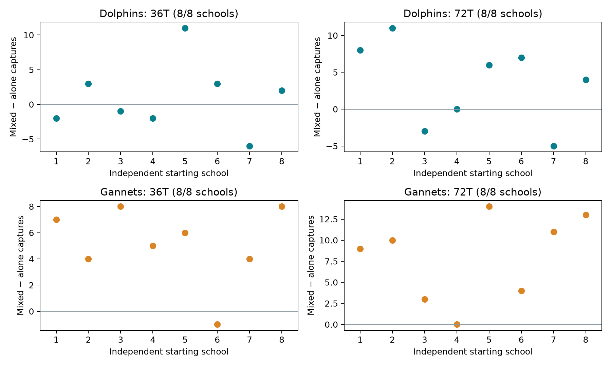

All prespecified horizons are sealed and validated.
Fixed exposed-prey dolphin cycle, unchanged gannet policy and contact physics. Each of eight new starting schools has one matched D/G/DG triplet and one stochastic setting. The36T and72T records come from the same continuous trajectory. Historical development and two-school replication results are excluded.
Capture success remains0.7 conditional on an eligible physical oral contact. Units are uncalibrated. Dolphins use2T continuous nearby-prey pressure before a feasible strike; this does not certify school compaction or explicit waiting for a bird dive.
| school_seed | D_alone | D_with_gannets | D_difference | G_alone | G_with_dolphins | G_difference | joint_positive |
|---|---|---|---|---|---|---|---|
| 39064501 | 24 | 22 | -2 | 2 | 9 | 7 | False |
| 39064502 | 17 | 20 | 3 | 3 | 7 | 4 | True |
| 39064503 | 22 | 21 | -1 | 3 | 11 | 8 | False |
| 39064504 | 20 | 18 | -2 | 6 | 11 | 5 | False |
| 39064505 | 18 | 29 | 11 | 2 | 8 | 6 | True |
| 39064506 | 22 | 25 | 3 | 9 | 8 | -1 | False |
| 39064507 | 24 | 18 | -6 | 6 | 10 | 4 | False |
| 39064508 | 21 | 23 | 2 | 4 | 12 | 8 | True |
| school_seed | D_alone | D_with_gannets | D_difference | G_alone | G_with_dolphins | G_difference | joint_positive |
|---|---|---|---|---|---|---|---|
| 39064501 | 44 | 52 | 8 | 6 | 15 | 9 | True |
| 39064502 | 32 | 43 | 11 | 10 | 20 | 10 | True |
| 39064503 | 46 | 43 | -3 | 14 | 17 | 3 | False |
| 39064504 | 43 | 43 | 0 | 15 | 15 | 0 | False |
| 39064505 | 49 | 55 | 6 | 2 | 16 | 14 | True |
| 39064506 | 43 | 50 | 7 | 12 | 16 | 4 | True |
| 39064507 | 48 | 43 | -5 | 13 | 24 | 11 | False |
| 39064508 | 47 | 51 | 4 | 13 | 26 | 13 | True |

{
"status": "complete",
"independent_schools": 8,
"bootstrap_draws": 10000,
"analysis_seed": 88491009,
"resampling_unit": "whole paired school vectors, equal school weights",
"marginal_interval_coverage": 0.975,
"familywise_interpretation": "approximate95% across two primary species; small-n percentile-bootstrap limits",
"D": {
"mean_difference": 1.0,
"interval": [
-2.375,
5.0
]
},
"G": {
"mean_difference": 5.125,
"interval": [
2.75,
7.0
]
},
"joint_positive": 3
}Bootstrap resamples whole school-paired vectors with equal weights.97.5% marginal percentile intervals target approximate95% familywise coverage across the two primary species. With only eight schools, interval coverage and tails are uncertain. Secondary72T and36–72T comparisons are descriptive; horizons are not independent observations.
If all160 fish are physically captured, native stepping ends and subsequent capture totals remain exactly fixed. Rates retain the prespecified nominal36T/72T denominator. Native duration, steps and effort remain the actual observed values; no later movement, handling or energy expenditure is invented.
Species-level outcomes and effort · Paired school outcomes · 36–72T increments · Evidence audit and pending cases · Primary statistics
Analysis uses zero native simulation steps. Sealed horizon records:48; pending horizon records:0.